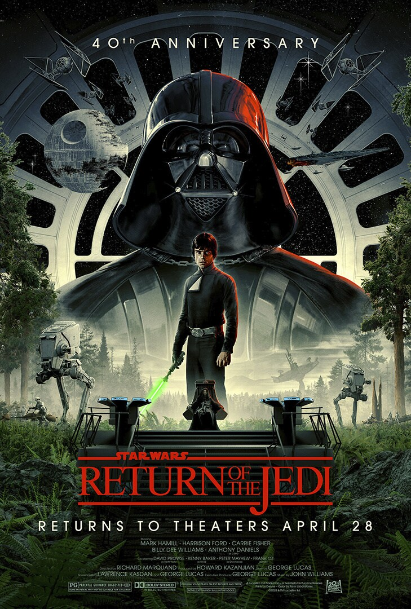
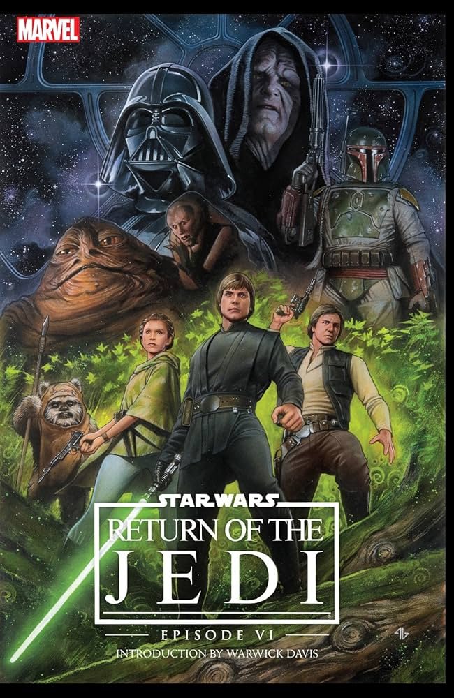
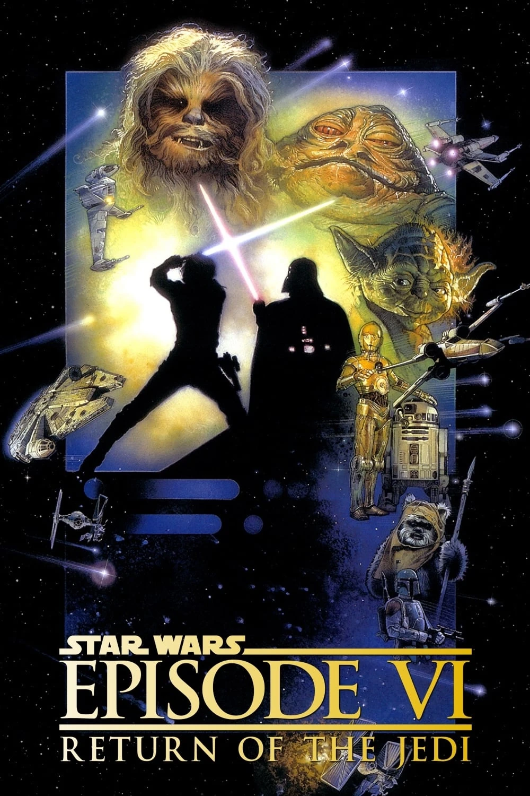
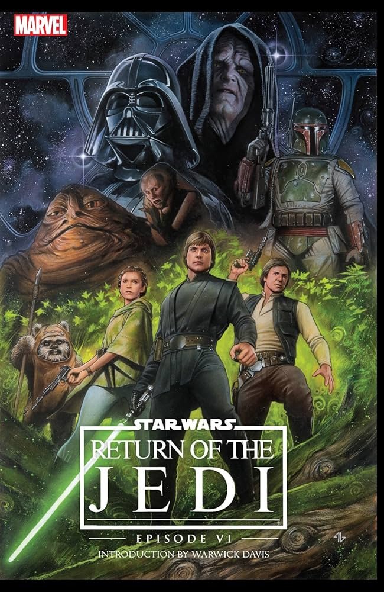
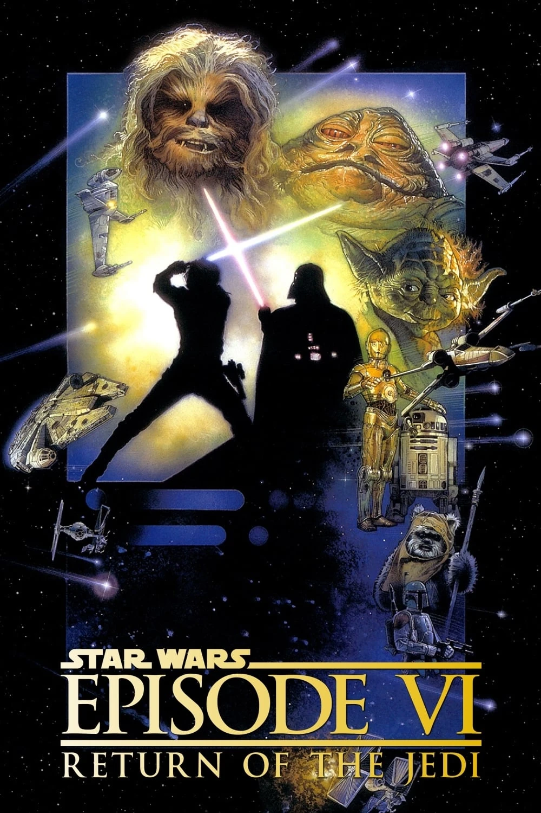

Return of the Jedi
In the final chapter of the original trilogy, the Empire is constructing a new Death Star. Luke Skywalker, Princess Leia, Han Solo, and their allies embark on a mission to rescue Han from the clutches of the vile gangster Jabba the Hutt. Meanwhile, Luke returns to complete his training with Yoda, who reveals that there is another Skywalker. As the Rebels prepare for an assault on the new Death Star, Luke confronts Darth Vader, hoping to redeem his father and bring him back from the dark side. With the help of the Ewoks, the Rebel forces launch a final assault, and Luke’s confrontation with the Emperor and Vader results in Anakin Skywalker’s redemption, destroying the Emperor and bringing balance to the Force. The Empire is defeated, and peace is restored to the galaxy.
 



Characters